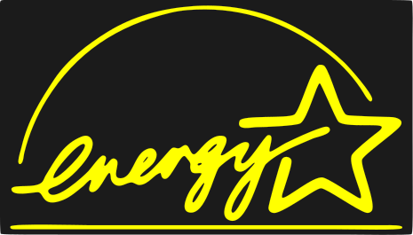

A problem has been detected and Dowins has been shut down to prevent damage
to your computer.
UNKNOWN_HARD_ERROR
If this is the first time you've seen this Stop error screen,
restart your computer. If this screen appears again, follow these steps:
Check to make sure any new hardware or software is properly installed.
If this is a new installation, ask your hardware or software manufacturer
for any Dowins updates you might need.
If problems continue, disable or remove any newly installed hardware
or software. Disable BIOS memory options such as caching or shadowing.
If you need to use Safe Mode to remove or disable components, restart
your computer, press F8 to select Advanced Startup Options, and then
select Safe Mode.
Technical information:
*** STOP: 0x00000000 (0x00000000, 0x00000000)
Socrimoft BIOS v0.01-PROTO, not An Energy Star Ally
Copyleft (C) 2023-2024, Socrimoft Software, Inc.
Main Processor : Socrimoft Virtual Processor @ 1GHz
Memory Testing : 000000K
Disks Testing : awaiting S.M.A.R.T. results

Unable to boot operating system on hard drive
Attempting Network Boot
Target found at 10.
[.]
Socrimoft
Dowins
XP
Professional
Copyleft C Socrimoft Corporation
Socrimoft


 My Computer
My Computer
 Recycle Bin
Recycle Bin